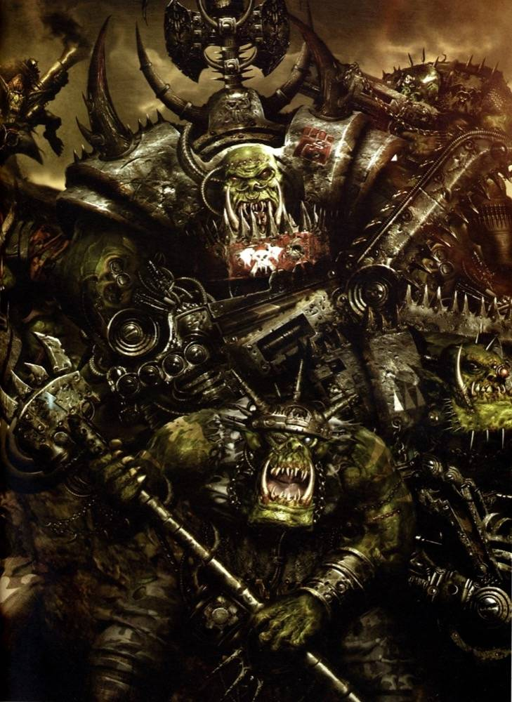

Orks
| Orks Greenskins, Orkoids | |
|---|---|
Ork war-glyph, as recorded by the Ordo Xenos Artwork © Games Workshop | |
| Classification | Xenos; fungoid, symbiotic species; Class: Orkoid (Ordo Xenos catalogue) |
| Origin | Created by the Old Ones as the Krork, more than sixty million Terran years ago |
| Population | Unknown; Imperial estimates run to hundreds of trillions |
| Leadership | Warbosses, Warlords and Overlords; whoever is biggest and loudest |
| Gods | Gork and Mork |
| Clans | Goffs, Evil Sunz, Bad Moons, Blood Axes, Snakebites, Deathskulls and others |
| Leaders in the Era Indomitus | |
| Ghazghkull Thraka, Prophet of the Waaagh!; Gorgutz 'Ead 'Unter; Nazdreg Ug Urdgrub; countless lesser Warbosses | |
| Principal wars against the Imperium | |
| Ullanor (end of the 30th millennium); War of the Beast (544–546.M32); Battle of Rynn's World (989.M41); the Wars for Armageddon (941.M41, 998.M41); the Octarius War | |
The Orks, also called Orkz or Greenskins, are a fungoid xenos species and, by the reckoning of the Ordo Xenos, the most numerous intelligent race in the galaxy after mankind itself. They are physically powerful, rapidly reproducing and fond of war to the extent that, in Imperial analysis, war is their culture and their religion and the only thing they have in common. They are the Imperium's oldest continuous opponent among the xenos, having been present on its frontiers since the Great Crusade, and the single most frequent source of the Imperium's wars.[1][2]
No Ork Waaagh! has ever conquered the Imperium, and none has ever been defeated for good. Every successful Imperial victory against the Orks has been followed by a further Ork invasion, often within a few decades, on a world nearby. The Orks' spores remain in the soil of every world they have fought on, and an Ork infestation cannot be removed even by a successful purge. In the Imperium's more sober assessments, the Orks are an ecological force rather than an enemy, and are treated accordingly.[3]
In the Era Indomitus the Orks have grown more numerous and more dangerous than at any time since the War of the Beast, and the Ordo Xenos reports a "green tide" along nearly the whole of the Imperium's borders. The greatest Ork warlord of the age, Ghazghkull Thraka, is regarded as the Imperium's single most dangerous xenos individual.[4]
Origins and biology
[edit]The Krork
[edit]The Imperium's current consensus, which the Adeptus Mechanicus and the Ordo Xenos have shared since the Era Indomitus, is that the Orks are a bio-engineered species made by the Old Ones, who called them the Krork, as a warrior race for the War in Heaven against the Necrontyr and the C'tan. The Old Ones, whom the Orks remember as the "Brain Boyz", made the Krork large and resilient and gave them an inherent ability to spread by spores. When the Old Ones' own civilisation fell, the Krork were left to the galaxy, and their descendants are the Orks of today. Earlier Imperial theories held that the Orks were of natural origin, and that the Krork were a separate subspecies. Neither belief has been proved, and Ork sources, which consist of belligerent folk tales, give no help.[1]
The Waaagh!
[edit]The Orks are non-psychic as individuals, but together they generate a psychic field that Imperial scholars call the Waaagh!. It is the force that draws their warbands together, causes their weapons and machines to work when they ought not to, and turns a belief into a fact if enough Orks hold it. A Waaagh! begins with a single powerful Warboss, perhaps one who has received a vision from the Ork gods, and it grows as others join him, until the field is powerful enough to carry a whole fleet. The same field causes Ork vehicles to work only because their builders believe they will, and the Mechanicus holds this to be heresy of the highest order.[1][5]
The Ork lifecycle is a matter of spores. Ork spores are released when an Ork dies and take root in the soil, from which new Orks grow, fully formed and already educated in the basics of Ork life. A planet on which Orks have lived has a permanent Ork population, even if all adult Orks are killed, and the Orks of such a planet will rise again years later. The Imperium has tried virus bombs, defoliants and even exterminatus against Ork worlds, with varied results. The spores are the reason Ork wars are cumulative: each Waaagh! leaves behind a more heavily infested region for the next.[1]
Early Imperial contact
[edit]The Great Crusade and Ullanor
[edit]Ork empires were among the first xenos powers that the Imperium met in the Great Crusade. The Orks of that period held many worlds in the galactic east and the north, and several of their warlords had assembled large and rudimentary realms. The greatest of these, the Ork empire of the Overlord Urrlak Urruk, ruled from the world of Ullanor, was the target of a vast Imperial expedition, the Ullanor Crusade, at the end of the 30th millennium. The Emperor himself came to the war, with a great part of the Space Marine Legions and the whole of the Imperial war machine, and the Orks of Ullanor were destroyed in the largest single battle of the Great Crusade.[6][7]
The victory at Ullanor, the Triumph, was the high point of the Great Crusade. The Emperor was said to have taken a lesser part in the war than his Legions. He honoured his son Horus of the Luna Wolves by naming him Warmaster at the Triumph, a title which Horus was to use in the Heresy. After the Triumph the Emperor withdrew from the war and returned to Terra, and the Crusade's leadership was left to the Warmaster. Imperial scholars note that the Orks' defeat was an immediate cause of the Heresy's timing, since it brought together nearly all the Legions on one battlefield and gave Horus his authority.[8][7]
The Orks did not disappear. As the Heresy burned across the galaxy, and the Imperium's border forces were withdrawn, the Orks of the east and the north recovered and spread. After the Great Scouring, the Imperium discovered that most of the Ork worlds that the Great Crusade had cleansed were again inhabited. This was the first lesson in a pattern that has repeated through the millennia.[9]
The War of the Beast
[edit]The greatest Ork invasion since Ullanor began in 544.M32, in the period called the Time of Rebirth, when the Imperium was recovering from the long wars of the Heresy and its aftermath. A Warlord, who is known only as the Beast, gathered a horde of an unprecedented size and ravaged the Imperium on a scale that had not been seen since the Heresy. His Waaagh! fell on worlds in all the segmentums, overran the defences of whole sectors and reached the approaches to Terra itself. The invasion is the subject of the Annals of the Time of Rebirth and is counted by the Administratum as the end of the Time of Rebirth.[2][1]
The Imperium's response was extreme. In 546.M32, with the war near its worst, the Imperial leadership launched an assault on Ullanor Prime, the Beast's base, with the full strength of several Chapters. The Beast was killed and his Waaagh! fell apart, but the Space Marine Chapters involved lost thousands of Astartes, and the cost to the Imperial Army was reckoned in the millions. The war is recorded as the origin of the Ordo Xenos's practice of watching the Orks and also of the formation of the Deathwatch, the Chamber Militant that exists to fight xenos threats.[1][5]
The wars of the 41st millennium
[edit]Waaagh!s of the Dark Millennium
[edit]The Imperium's records of the 41st millennium contain thousands of Ork invasions, from a few score of Ork ships to Waaagh!s which spanned several sectors. A selection of the best known is given here. In 797.M41, a wave of Ork uprisings in the Ultima Segmentum was contained only by the work of Marneus Calgar and the Ultramarines. In 815.M41, the Warboss Grog Ironteef launched what Imperial records call the War of Dakka against the young T'au Empire. In 928.M41 Waaagh! Dregdakka entered the Adransa Cluster and was turned back on the planet Thrassos by the combined forces of two Chapters, who lured the Orks onto a refinery platform and destroyed it. In 989.M41, Waaagh! Snagrod unified the Ork factions of the Loki Sector and destroyed the colony of Badlanding before it turned on the Crimson Fists home world of Rynn's World. The Orks destroyed the Chapter's fortress-monastery with a single missile and reduced the Chapter to a fraction of its strength, and the Crimson Fists' survivors held the world until help arrived.[5][10]
By 996.M41, the Orks' activity had grown to an epidemic. The Imperium's forces, already strained by the Black Crusade and the Tyranid hive fleets, found themselves forced to respond to a new Ork invasion almost every Terran week. The Departmento Munitorum has described the period as the worst year for Imperial Ork wars since the Beast.[4]
The Wars for Armageddon
[edit]The most famous war between the Imperium and the Orks is that for Armageddon, the Hive World in the Segmentum Solar. In 941.M41, the Ork warlord Ghazghkull Thraka invaded Armageddon at the head of a Waaagh! that was unprecedented in its organisation. Ghazghkull, a Goff Warboss who had survived a grievous head wound and thereafter reported visions from the Ork gods, made himself the Prophet of the Waaagh!. On Armageddon the Orks nearly overran the world in a solar month, and the planet was saved by the Commissar Sebastian Yarrick, who held the Hades Hive against the Orks and whose defiance made him famous in the Imperium. This is counted as the Second War for Armageddon, and it was won at a terrible cost to the Imperium.[11]
Ghazghkull left Armageddon, but he returned. In 998.M41, after fifty solar years of preparation, the Warlord invaded the barely recovered world at the head of an even greater Waaagh!, and the Third War for Armageddon began. The Imperium committed vast forces to it, including Space Marines, the Steel Legion, the Sisters of Battle and the Titan Legions, and Ghazghkull's invasion was defeated after months of fighting. The Warlord, however, was not killed. He left the planet with his force largely intact, having brought thousands of Ork clans together, and the Imperial command has long suspected that his goal was something other than the conquest of Armageddon.[11][4]

Octarius
[edit]
The Orks' greatest recent success is the Octarius cluster, a group of star systems in the Ultima Segmentum, on the galactic east where Ghazghkull's Waaagh! has gathered an Ork empire of almost unimaginable size. When the Tyranid Hive Fleet Leviathan approached the Imperium in 997.M41, the Inquisitor Lord Fidus Kryptman of the Ordo Xenos devised a plan, known as the Kryptman Gambit, to turn a large part of the hive fleet away from the Imperium and into the Ork-held Octarius systems, where it would be consumed in a war with the Orks. The plan worked, and the Octarius War between the two xenos species has continued ever since. Ghazghkull has used the war as a means of unifying the Orks of his empire, and the Imperium has been spared a part of the Tyranid threat. It is also a danger: should the Orks win at Octarius, the resulting Waaagh! would be larger than any the Imperium has faced.[4][5]
The Era Indomitus
[edit]The opening of the Great Rift, and the Fall of Cadia, have given the Orks both opportunity and cause. The Imperium's defences have been drawn off to meet the Black Crusade and the Rift's daemon incursions, while the Orks, who are unaffected by Chaos in the usual ways, have grown rapidly. The Ordo Xenos reports a huge increase in Weirdboyz, the Orks' rare psychic individuals, and in the large machines, Gargants and Stompas, that the Orks build in imitation of their gods. In several sectors the Imperium's forces have been forced to fight Ork armies and Chaos on the same field, and the Orks have been unusually good at fighting daemons, which they regard as a kind of rival war band.[4]
Ghazghkull's Waaagh! has spread through the Segmentum Solar and beyond, and the Imperial command at Armageddon has judged that its attacks on that world were intended as much to recruit as to conquer. The Warlord is reputed to be a seer, and his prophecies have been correct often enough that Imperial scholars have begun to take them seriously. Imperial accounts of his present whereabouts differ, and the Ordo Xenos holds that he is gathering the Great Waaagh! for a blow whose target has not been identified.[4][11]
Society and culture
[edit]Ork society is hierarchical and violent. Power belongs to the individual who can win it by force, and a Warboss who loses his strength is overthrown within days. The Orks are divided into clans, such as the Goffs, the Evil Sunz, the Bad Moons, the Blood Axes, the Snakebites and the Deathskulls, each with its own characteristic way of fighting and its own colours. The Goffs are the most brutal, the Evil Sunz love speed and the Bad Moons have the greatest wealth in teeth, which the Orks use as currency. The Blood Axes are the most Imperial in their organisation, since they have borrowed methods from human armies and the Imperium regards them as traitors for it. The Freebooterz are Ork pirates and mercenaries who serve whoever pays, and they are in practice bands of marauders at large in the Imperium.[1]
Orks are not stupid. Their technology works, though it should not, and their invention and their ability to scavenge and build from whatever is to hand has surprised Imperial engineers. The Mekboyz build weapons and vehicles from scrap, and the Painboyz carry out surgery that is, if crude, effective. The Orks are also a species who will not abandon a fight that is going well. The Mechanicus and the Inquisition find them an almost perfect warrior culture: they live for war, breed for it, and are happy to die in it.[1]
Imperial policy
[edit]The Imperium has no policy toward the Orks other than war. The Departmento Munitorum keeps a standing assessment of the Ork threat in every segmentum. Its recommendations are that Ork Waaagh!s should be destroyed when small, since a large one cannot be stopped, and that the Orks' own infighting should be exploited whenever possible. Many sectors have been saved by the Orks' habit of fighting each other when there is no enemy to hand, and in a few cases the Imperium has deliberately encouraged this. The more radical inquisitors have gone further: some consider the Ork species a useful weapon against the Tyranids and Chaos, and the Kryptman Gambit followed this line of thought.[3][4]
The Imperial Cult regards Orks as the purest example of xenos corruption, and Imperial preachers describe them as a plague sent to try mankind's faith. Space Marine Chapters have a long tradition of fighting them. The Salamanders, Space Wolves, Black Templars, Imperial Fists and Ultramarines have all fought major Ork wars, and the Crimson Fists are known to be the Chapter most bitterly opposed to them.[5]
Timeline
[edit]| Date | Event |
|---|---|
| Age of Technology | The Orks spread through the galaxy as a race of fighting bands, long before the Imperium.[a] |
| Late M30 | The Great Crusade fights the Ork empires, which are later destroyed in the Ullanor Crusade. |
| c. 999.M30 – 000.M31 | The Ullanor Crusade destroys the Ork empire of Urlakk Urg. |
| 002.M31 | The Ork remnants of Ullanor are pursued into the Kayvas Belt. |
| M36–M37 | Ork WAAAGH!s strike the Imperium's frontier worlds in the wars of the Waning.[b] |
| 606–792.M38 | The T'au Empire fights its first long war against the Orks in the Campaign of Cleansing. |
| 989.M41 | The Battle of Rynn's World: the Crimson Fists are nearly destroyed by the Orks. |
| M41 | Ork WAAAGH!s strike the Imperium's frontiers throughout the Time of Ending.[c] |
| 999.M41 | Ork hordes join the chaos of the Great Rift and the Ork WAAAGH!s spread across the galaxy.[d] |
| Early M42 | The Orks remain the galaxy's most numerous xenos, and the Imperium fights their WAAAGH!s on every front. |
See also
[edit]
Notes
[edit]References
[edit]- ^ a b c d e f g h Reynolds, John. Fabius Bile: Clonelord (novel). Black Library, pp. 406-407. Codex: Orks (8th Edition), pp. 6-27. Games Workshop.
- ^ a b Prophecy of the Wolf (8th Edition), pg. 3. Games Workshop. Abnett, Dan. Horus Rising (novel). Black Library.
- ^ a b McNeill, Graham. The Wolf of Ash and Fire (novella). Black Library. Swallow, James. Fear to Tread (novel). Black Library.
- ^ a b c d e f g Codex: Orks (7th Edition). Games Workshop. The Red Waaagh! (7th Edition Supplement). Games Workshop.
- ^ a b c d e Waaagh! Ghazghkull - A Codex: Orks Supplement (7th Edition). Games Workshop. Warhammer 40,000: Rulebook (6th Edition), pp. 169, 200-203. Games Workshop.
- ^ Codex: Orks (4th Edition). Games Workshop. Spurrier, Simon. Xenology. Black Library, pp. 41-42.
- ^ a b Codex: Orks (3rd Edition). Games Workshop. Digganob (3rd Edition). Games Workshop.
- ^ Codex Imperialis (1st Edition), pg. 50. Games Workshop. Codex: Orks (2nd Edition). Games Workshop.
- ^ Gorkamorka: Da Uvver Book (2nd Edition). Games Workshop. Liber Xenologis (Background Book), pg. 70.
- ^ 'Ere We Go!: Orks in Warhammer 40,000 (1st Edition). Games Workshop. Waaargh!: The Orks (1st Edition). Games Workshop.
- ^ a b c Rogue Trader: Into the Storm (Rulebook), pp. 56-69. [http://www.belloflostsouls.net/2018/10/40k-orktober-the-clans.html Orktober - The Clans of WAAAGH!].